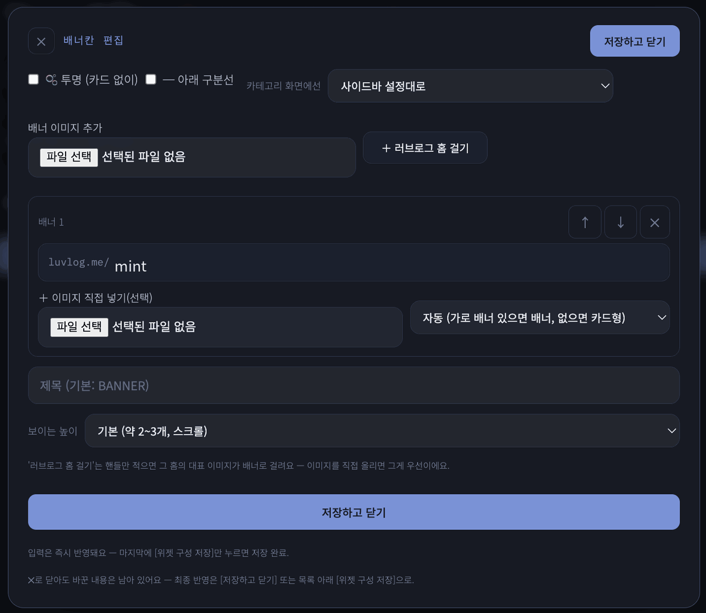

러브로그 · 이웃·방명록
이웃과 연결하기
걸기와 걸리기
- 배너칸의 [＋ 러브로그 홈 걸기]에 핸들만 적으면 그 홈이 배너로. 상대가 배너 이미지를 올려뒀으면 그 이미지, 없으면 사진+이름 카드형. 내가 이미지를 직접 올리면 그게 우선.
- 이웃 홈 위젯에 주소를 적으면 이름·사진이 자동으로 뜨고 [사진]으로 원하는 이미지 지정도 가능. 러브로그 밖의 홈·트위터도 https:// 주소+이름으로.
- 서로가 서로를 걸면 — 이웃이든 배너칸이든 — 이름 옆에 ♥가 붙습니다. 이것이 「서로 이웃」.
- 상대에게 내 이름·사진이 자동으로 뜨려면 기본 정보의 「내 홈 공개하기」를 켜야 합니다.
- 이웃이 주소를 바꿔도 배너·이웃 홈 위젯이 새 주소를 알아서 보여주고, 7일 안에 내 홈에 한 번 접속하면 자동 저장됩니다.

사진 자리img/ll-nb-banner.png방명록
- 로그인한 사람이 남기고, 🔒 비공개로 남기기를 켜면 홈 주인(과 본인)에게만 보입니다(작성자는 표시).
- 홈 주인은 방명록마다 답글을 달 수 있습니다. 답글이 달리면 남긴 사람이 다시 방문했을 때 알림이 뜹니다.
- 새 방명록 글이 달리면 카테고리 목록의 방명록 이름 옆에 작은 점(주인에게만).
- 방명록·댓글의 @주소를 누르면 그 사람 홈으로.
댓글과 반응
- 댓글 허용 범위(기본 정보) — 로그인한 누구나 / 서로 이웃만. 읽기는 누구나.
- 🔒 비밀 댓글은 홈 주인과 작성자에게만, [답글]로 한 단계 대화.
- 💛 이모지 반응 — 댓글·방명록 글의 ＋로 작은 이모지(한 번 더 누르면 취소).